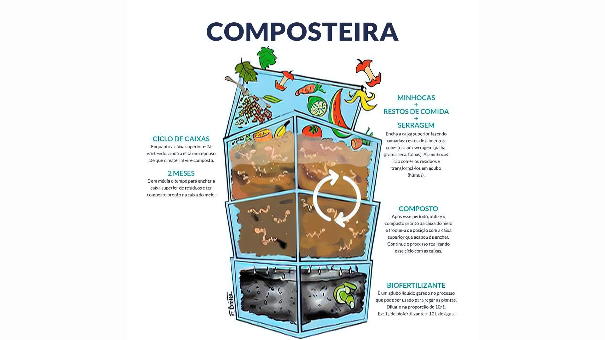

🌱 Compostagem: Transforme Lixo em Vida
A compostagem é um processo natural que transforma resíduos orgânicos em um adubo rico em nutrientes, chamado de composto. É uma das melhores maneiras de reduzir o lixo que você envia para aterros sanitários e, ao mesmo tempo, criar um fertilizante incrível para suas plantas, horta ou jardim.
✅ O que COMPOSTAR
Para uma composteira saudável, equilibre "materiais verdes" (ricos em nitrogênio) e "materiais marrons" (ricos em carbono).
- Verdes: Cascas de frutas, restos de vegetais, borra de café, cascas de ovos, aparas de grama.
- Marrons: Folhas secas, serragem, papelão e papel não plastificado, palha, galhos secos.
❌ O que NÃO COMPOSTAR
Alguns itens podem atrair pragas, gerar mau cheiro ou conter patógenos que não são eliminados na compostagem caseira.
- Carnes de qualquer tipo
- Laticínios (queijo, iogurte)
- Gorduras, óleos e alimentos cozidos com gordura
- Fezes de animais domésticos
- Plantas doentes ou tratadas com pesticidas

👣 Como Começar em 5 Passos Simples
- Escolha o Local: Encontre um canto sombreado no seu quintal para montar uma pilha ou use uma composteira doméstica (caixas plásticas empilhadas).
- Camada Marrom: Comece com uma camada de materiais marrons (folhas secas, papelão picado) para garantir uma boa aeração.
- Adicione os Verdes: Coloque seus resíduos orgânicos da cozinha (materiais verdes) sobre a camada marrom.
- Cubra e Umedeça: Sempre cubra os resíduos verdes com mais uma camada de material marrom para evitar odores e moscas. Borrife um pouco de água para manter a umidade, mas sem encharcar. A pilha deve ficar úmida como uma esponja torcida.
- Revire o Composto: A cada uma ou duas semanas, misture as camadas com um garfo de jardim. Isso oxigena o material e acelera a decomposição. Em alguns meses, você terá um adubo escuro e com cheiro de terra!